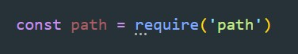
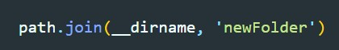
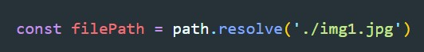

Для работы с путями используется модуль path
Так же существует две глобальные переменные
join() - позволяет склеивать пути. Добавляет слеш или обратный слеш в зависимости от операционной системы
resolve() - переводит путь к файлу в относительный путь
extname() - определяет расширение файла
dirname() - определяет имя директории, содержащей файла